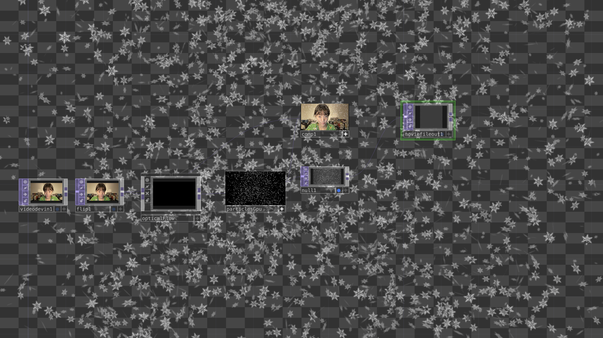

I would like to further investigate TouchDesigner and its capabilities. Specifically, I am interested in exploring the integration of Kinect with a computer to control particle effects within TouchDesigner from this link: https://www.youtube.com/watch?v=Em1Y5qVMiAs&t=1s.
I discovered that the Kinect is unable to connect with my Macbook. As a result, I will be simplifying the "controlling particles" process by utilizing the camera inside TouchDesigner, rather than relying on the Kinect. Here is the diagram for my TD project.

"Princess Elsa" is an interactive project developed in TouchDesigner. It integrates real-time body movement tracking, creating an interactive experience in which the user's movements are followed by a dynamic snowflake effect.
Optical Flow: This function captures the user's body movements via a camera. It allows real-time motion tracking within TouchDesigner.
ParticleGPU System: The snowflake effect is generated using the ParticleGPU function. These particles follow the flow of the user's movements, giving the appearance that the user is controlling the snowflakes.
Interactive Visuals: As the user moves, the snowflakes follow their gestures, resulting in a magical, flowing interaction reminiscent of Princess Elsa's snowpowers. 
Camera Input: Captures and feeds the user's body movements into the system.
Optical Flow: Detects and analyzes movement for dynamic interaction.
ParticlesGPU: Renders and controls the snowflake particles following the user's motion.
I cannot upload a long video here, so I just uploaded 2 GIFs. You can see that my head and hands are moving left and right.


Yeah! I am Princess Elsa now!